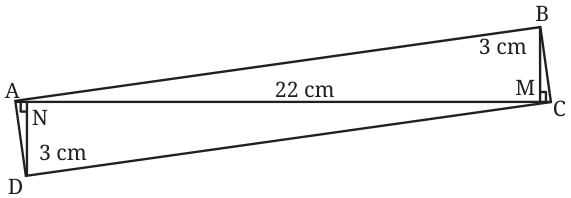
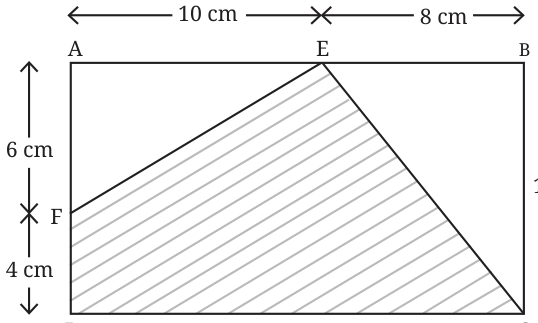

- 1.Find the area of the quadrilateral ABCD given that \(AC = 22\) cm,
\(BM = 3\) cm, \(DN = 3\) cm, BM is perpendicular to AC, and DN is perpendicular to AC.

- 2.Find the area of the shaded region given that ABCD is a rectangle.

- 3.What measurements would you need to find the area of a regular
hexagon?
- 4.What fraction of the total area of the rectangle is the area of the
blue region?
- 5.Give a method to obtain a quadrilateral whose area is half that of
a given quadrilateral. One can derive special formulae to find the areas of a parallelogram, rhombus and trapezium.